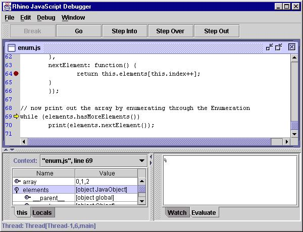

現在位置: Rhino プロジェクト・ページ > Rhino Debugger
Rhino JavaScript デバッガー
Christopher OliverRhino JavaScript デバッガーは GUI でデバッグでき、Rhino で動く JavaScript のスクリプトを解釈することができます。 このデバッガーは、mozilla ブラウザーでの JavaScript のスクリプトを 動作させるものではありません。Rhino は、そのような環境で使われる エンジンではないことに注意してください。

現在の制限について …
- JDK 1.2 以上が必要です
- rhinoTip.zip にある js.jar が必要です【訳注: 普通に js.jar でよいはず】
- ブレークポイント・メニューはありません
Rhino JavaScript デバッガーの使い方
Mozilla の Rhino JavaScript エンジンは、JavaScript スクリプトのデバッグ用にソースレベルデバッガーを含んでいます。 デバッガーは、それ自体 Java プログラムになっていて、以下のように実行できます
java org.mozilla.javascript.tools.debugger.Main [オプション] [ファイル名.js] [スクリプト引数]
オプションはシェルと同じです。【訳注: 参考 JavaScript Shell】
Rhino JavaScript デバッガーは、マルチスレッドで走らせながらスクリプトをデバッグでき、 実行中のスクリプトのカレントスコープでの、ブレークポイントのセット＆クリア、実行の制御、変数の表示、任意の JavaScript コードの評価 (evaluate)、の機能を提供します。
- Console Window
- デバッガーは System.out や System.in や System.err のストリームを、内部の JavaScript console window へリダイレクトします。 そしてあなたに、JavaScript コードを入力したりシステム出力を見たりできる、編集可能なコマンドラインを提供します。 この console window は、あなたが入力したコマンドの履歴を保持します。 キーボードの上下矢印キーを押下することで、履歴リストを通じて戻したり進めたりできます。
- Opening Scripts
- メニューバーの File->Open メニュー項目を選び、ファイルから JavaScript のスクリプトを読み込むことができます。 この操作で、読み込むスクリプトの位置のために、ファイル選択ダイアログボックスが表示されるはずです。 選択されたファイルは、新しいウィンドウ内にコンパイルされ表示されるでしょう。
- Running Scripts
- メニューバーの File->Run メニュー項目を選び、ファイルから JavaScript のスクリプトを実行することができます。 この操作で、実行するスクリプトの位置のために、ファイル選択ダイアログボックスが表示されるはずです。 読み込んだスクリプトは、新しいスレッドで実行され、デバッガーの最初の命令に制御が渡されるでしょう。
実行の制御
デバッガーは、あなたがデバッグしているスクリプトの実行を制御するために、 次のような機能を提供します。
- Step Into
- 任意の関数呼び出しで、その中へシングルステップします。
下記のいずれかを行うことができます …
- メニューバーの Debug->Step Into のメニュー項目を選ぶ
- ツールバーの Step Into ボタンを押す
- キーボードの F11 キーを押す
(制御はデバッガーを離れて) 実行は再開するでしょう。 スクリプトの現在行が関数呼び出しを含んでいると、制御は関数の入り口でデバッガーに戻るはずです。 さもなければ、制御は、カレント関数の次の行でデバッガーに戻るでしょう。
- Step Over
- カレント関数内の次の行へシングル・ステップします。
下記のいずれかを行うことができます …
- メニューバーの Debug->Step Over のメニュー項目を選ぶ
- ツールバーの Step Over ボタンを押す
- キーボードの F7 キーを押す
実行は再開しますが、制御は、カレント関数かトップレベル (最上位) の次の行で、デバッガーに戻るはずです。
- Step Out
- カレント関数から戻るまで実行を継続します。
下記のいずれかを行うことができます …
- メニューバーの Debug->Step Out のメニュー項目を選ぶ
- ツールバーの Step Out ボタンを押す
- キーボードの F8 キーを押す
実行は再開し、カレント関数から戻るか、あるいはブレークポイントにヒットするまで続きます。
- Go
- スクリプトの実行をレジューム(再開) します。
下記のいずれかを行うことができます …
- メニューバーの Debug->Go のメニュー項目を選ぶ
- ツールバーの Go ボタンを押す
- キーボードの F5 キーを押す
実行は再開し、ブレークポイントにヒットするか、あるいはスクリプトを完了するまで続きます。
- Break
- 実行中のすべてのスクリプトを停止して、制御をデバッガーへ渡します。
下記のいずれかを行うことができます …
- メニューバーの Debug->Break のメニュー項目を選ぶ
- ツールバーの Break ボタンを押す
- キーボードの Pause/Break キーを押す
- Break on Exceptions
- JavaScript の例外がスローされるたびに制御をデバッガーへ渡すには、メニューバーの Debug->Break on Exceptions チェックボックスを ON にしてください。 スクリプトによって JavaScript の例外がスローされるたびに、メッセージ・ダイアログが表示され、例外発生の場所が表に現われ (raise) て、制御をデバッガーへ渡すはずです。
- Break on Function Enter
- Debug->Break on Function Enter をチェックすると、 関数またはスクリプト内に実行が入るたびに、制御をデバッガーへ渡すはずです。
- Break on Function Exit
- Debug->Break on Function Return をチェックすると、 関数またはスクリプトから戻ろうとするたびに、制御をデバッガーへ渡すはずです。
- スタックを上下に移動
- デバッガーのメインウィンドウ左下の (ドック可能な) ペイン (pane) は、"Context:" のラベルのコンボ・ボックスを含み、そしてそれは実行中のスクリプトの現在のスタックを表示します。 あなたは、コンボ・ボックスの項目を選択することで、スタックを上下に移動させることができます。 あなたがスタックフレームを選択するとき、そのスコープで可視的 (visible) な変数の、名前と値を反映して、変数と watch window を更新します。
- ブレークポイントのセット＆クリア
- デバッガーのメイン・デスクトップは file window を含み、
そこへあなたがデバッグしているそれぞれのスクリプトの内容を表示します。
下記のひとつを行うことで、スクリプトにブレークポイントを
セットすることができます …
- ブレークポイントをセットしたい行の上にマウスカーソルを置き、右クリック。 この操作でポップアップメニューが表示されるはずです。Set Breakpoint メニュー項目を選択します。
- ブレークポイントをセットしたい行の行番号で、単にシングルクリック。
選択された行に実行可能なコードを含んでいると、赤い点が行番号の隣に出現し、 その位置へブレークポイントがセットされるはずです。
下記のひとつを行うことで、スクリプトのブレークポイントをクリアする(取り除く) ことができます …
- ブレークポイントをクリアしたい行の上にマウスカーソルを置き、右クリック。 この操作でポップアップメニューが表示されるはずです。Clear Breakpoint メニュー項目を選択します。
- 赤い点、またはブレークポイントをクリアしたい行の行番号で、 単にシングルクリック。
赤い点は見えなくなり、その位置のブレークポイントは取り除かれるはずです。
変数を表示
デバッガーのメインウィンドウ左下の (ドック可能な) ペインはタブペインで、 "this" と "Locals" のラベルの 2 つのタブを持っています。 各ペインはツリー・テーブルを持ち、それぞれにカレント(現行) オブジェクトと 現在現われているローカル変数のプロパティーを表示します。
- This
- カレント・オブジェクトのプロパティーは、this テーブルに表示されます。プロパティーが JavaScript のオブジェクトであれば、 プロパティーは そのサブプロパティーを表すために拡張されるはずです。 this テーブルは、デバッガーに制御が戻るか、 もしくはあなたが Context: window でスタック位置を変更したとき、 そのたびごとに更新されます。
- Locals
- カレント関数のローカル変数は、Locals テーブルに表示されます。 変数が JavaScript のオブジェクトであれば、変数は そのサブプロパティーを 表すために拡張されるはずです。Locals テーブルは、 デバッガーに制御が戻るか、もしくはあなたが Context: window でスタック位置を変更したとき、そのたびごとに更新されます。
- Watch Window
- あなたは、任意の JavaScript 式を Watch: テーブルに入力できます。 デバッガーのメインウィンドウ右下に位置する (ドック可能な) ペインです。 あなたが入力した式はカレント・スコープで再評価され、そしてその現在値は、 デバッガーに制御が戻るか、もしくはあなたが Context: window でスタック位置を変更したとき、そのたびごとに表示されます。
- Evaluation Window
- Evaluate ペインは、デバッガーのメインウィンドウ右下に位置する (ドック可能な) ペインで、あなたが任意の JavaScript コードを入力できる、 編集可能なコマンドラインを含んでいます。 そのコードは、カレント・スタックフレームのコンテキストで評価されます。 その窓 (window) は、あなたが入力したコマンドの履歴を保持します。 キーボードの上下矢印キーを押下することで、履歴を通じて戻したり進めたりできます。